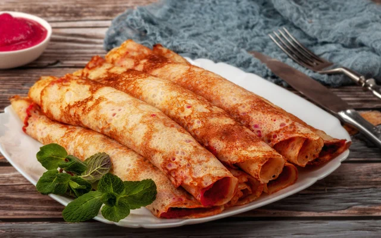
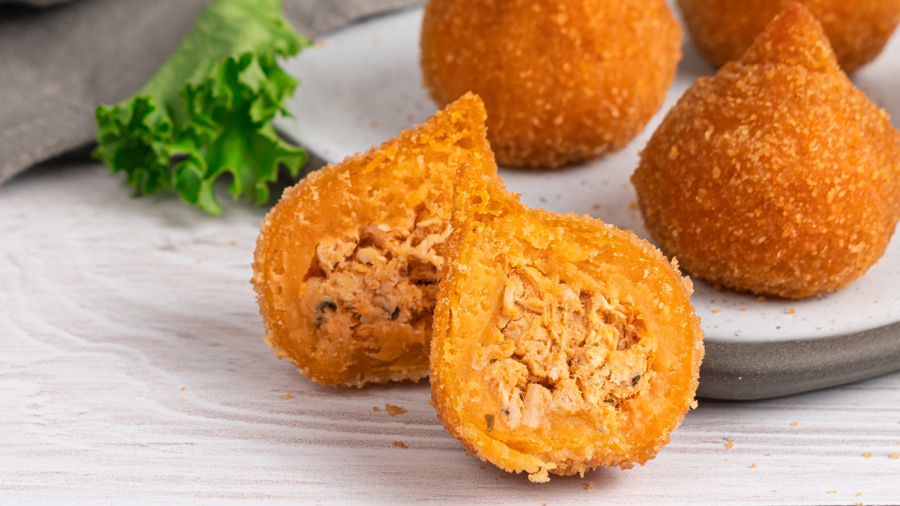

Home| Receita 1| Receita 2| Receita 3|

Panquecas finas enroladas, douradas, servidas em um prato branco. Ao lado, há um pequeno recipiente com geleia vermelha e algumas folhas de hortelã para decorar, sobre uma mesa de madeira.
Um prato com pequenos bolinhos fritos cobertos com açúcar, empilhados sobre um prato branco, com aparência dourada e crocante.

Salgadinhos fritos em formato de bolinhas (tipo coxinhas), com casca dourada e crocante. Um deles está cortado ao meio, revelando um recheio cremoso de frango. Ao fundo, há mais unidades no prato e uma folha de alface como decoração.